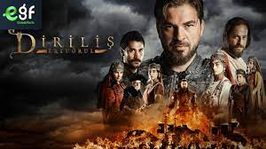
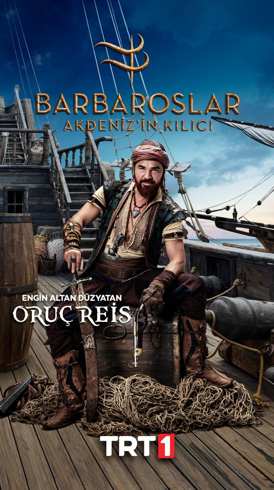
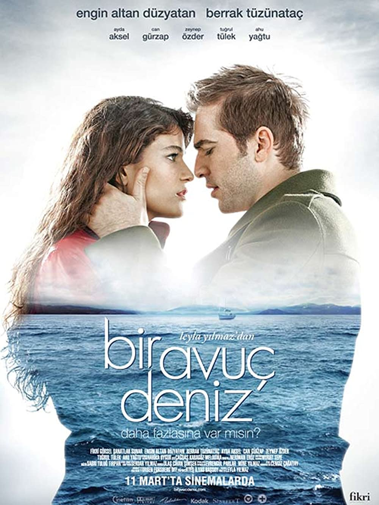
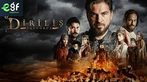
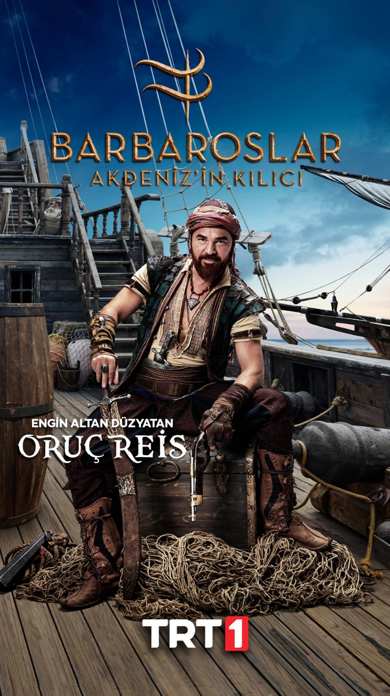
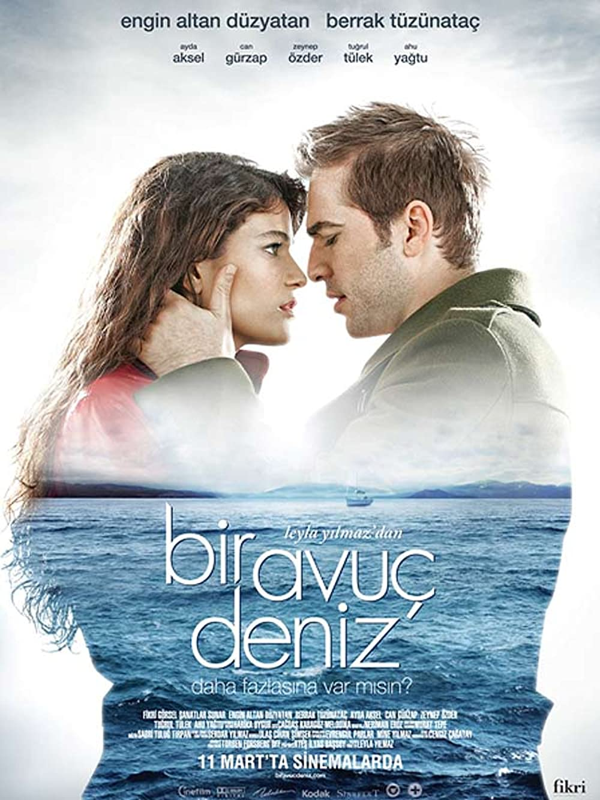

Name:"Engin Altan Düzyatans"
Mobile No: +90 212 555 1212
Email: engin@altan.duzyatans
Engin Altan Düzyatan (Turkish pronunciation: [æɲˈɟin aɫˈtan dyzjaˈtan]; born 26 July 1979) is a Turkish film and television actor. Born in Karşıyaka, İzmir Province, Turkey, Düzyatan studied theatre at the Dokuz Eylül University in his home province before making his acting debut with Ruhsar (2001). He then went on to act in various roles in film and television in Turkey. Düzyatan rose to international prominence for his role as Ertuğrul Bey in Diriliş: Ertuğrul.[1][2]
Early life:
Düzyatan was born on 26 July 1979, in Karşıyaka, İzmir, Turkey,[3][4] to Mevlan and Gülşen Düzyatan.[5] Engin Altan Düzyatan began acting during his high school days. His parents were Turkish migrants from Yugoslavia.[6][7] He joined Dokuz Eylül University to study theatre. He completed his course and moved to İstanbul where he started his professional acting career.[8]
Career:
He made his screen debut in the television series Ruhsar and went on to appear in Yeditepe İstanbul, Koçum Benim and Alacakaranlık.[7] In 2005, he acted in the films Beyza'nın Kadınları, directed by Mustafa Altıoklar, and Kalbin Zamanı. In 2007, Düzyatan appeared in the series Sevgili Dünürüm with Haluk Bilginer, Sumru Yavrucuk and Nevra Serezli.[7] His next roles were in the films Cennet (2008) and Mezuniyet (2009).[7] In 2009, he played Doctor Serdar Batur in the series Bir Bulut Olsam with Melisa Sözen and Engin Akyürek, written by Meral Okay.[4] Düzyatan acted in the films Romantik Komedi, New York'ta Beş Minare and Bir Avuç Deniz in 2010.[4] He hosted the game show Canlı Para which is Turkish version of The Million Pound Drop Live on Show TV in 2010 and 2011.[4] In 2014, he appeared in the series Cinayet with Nurgül Yeşilçay, Uğur Polat, Şükran Ovalı, Ahmet Mümtaz Taylan and Goncagül Sunar.[9]
Movies:
Movie Poster
 





Public image and personal life:
On 28 August 2014, he married the granddaughter of Selim Soydan and Hülya Koçyiğit, Neslişah Alkoçlar.[17][10] The couple has a son, Emir Aras (born 2016) and a daughter, Alara (born 2018).[18]In 2020, Düzyatan went on a short visit to Pakistan, where Diriliş: Ertuğrul has gained popularity, accepting the invitation of a private business company. [19] Pakistan's Make-A-Wish Foundation arranged a meeting between Düzyatan and three young terminally ill fans;[20] when there, Engin said, "Thank you very much, I can see I inspired you and I am very happy for this love."[21] [19] Pakistan's Make-A-Wish Foundation arranged a meeting between Düzyatan and three young terminally ill fans;[20] when there, Engin said, "Thank you very much, I can see I inspired you and I am very happy for this love."[21] After signing an agreement with the Lahore-based Chaudhary Group of Companies,[22] of which he was a brand ambassador, he visited Lahore and became one of the top discussions on social media and one of his pictures with a lion went viral.[23] He was treated with "a flood of love" while the Pakistani army had to protect him to avoid a stampede of people coming up to him.[24] Düzyatan returned to Turkey after being defrauded by Pakistani TikTok star Kashif Zameer.[25] Despite this incident, Kashif Zameer claimed that Düzyatan would return to Pakistan,[26] with a clip of his "pleasant memories" going viral.[27] Düzyatan also wishes to appear in a Pakistani drama series one day, "if it has a good story."[28]
Two statues of Ertuğrul on horseback inspired by Düzyatan's portrayal of Ertuğrul in Diriliş: Ertuğrul were placed by a private cooperative housing society in Lahore, Pakistan in 2020.[29][30] A bust of the character was also erected in Ordu, Turkey in 2020, although it was removed by local authorities after a resemblance Düzyatan was pointed out.[31][32] Düzyatan was named by 'The Muslim 500' as one of the world's most influential Muslims in 2020.[33] Düzyatan's Diriliş: Ertuğrul co-star Nurettin Sönmez felt filming for the scene of Ertuğrul's death in Kuruluş: Osman was difficult due to Düzyatan's legacy in playing the character.[34][35] Düzyatan supported the Turkish government's decision to reconvert Hagia Sophia into a mosque in 2020.[36]
Engin Altan Düzyatan's Audio Song
Engin Altan Düzyatan's Video Song
terms feed ©2021-2022 Disclaimer: Legal information is not legal advice,read the disclaimer.This informatiom provided on this site is not legal advice,does not constitute a lawyer refferel service,and no attorny-client or confidential realationship is or will be formed by use of the site.